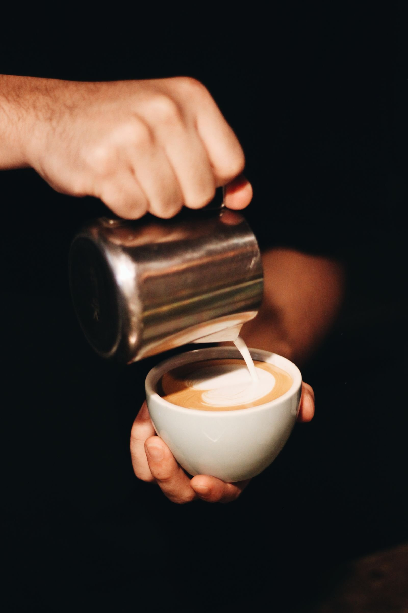
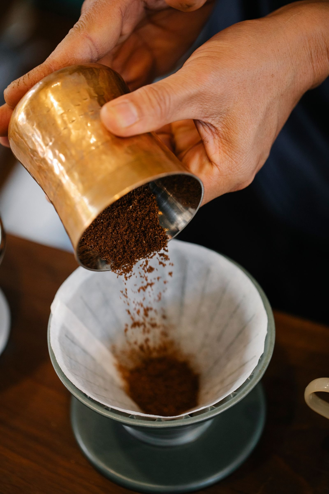

EST. 2021 · Yirgacheffe, Ethiopia · 2,200 m
Slow-roasted coffee,
poured with care.
One origin, one washing station, one roast at a time. Washed Yirgacheffe — blueberry, jasmine, and a clean finish — roasted in small batches every Tuesday, never more than we can sell fresh.
Roasted every Tuesday. Ships within 48 hours. No syrups, no shortcuts.
Medium — Balanced. Blueberry and jasmine, with a honeyed sweetness. The one we drink ourselves, every morning.
That mug on the right is real 3D — drag it to spin it.
The Craft · From bean to cup
Three steps. No shortcuts.

Select
We buy one lot at a time, from one washing station in Yirgacheffe. Washed process, 2,200 m altitude, harvested December to February. If the lot isn't good enough, we don't buy it.
Roast
Small batches — 12 kg at a time — roasted to order every Tuesday. Light for fruit, medium for balance, dark for chocolate. Never roasted more than we can sell fresh.
Brew
Dialled in daily. Espresso at 93°C, pour-over at 94°C, water at 90 ppm. The cup you get is the cup we tasted at 7 in the morning.
